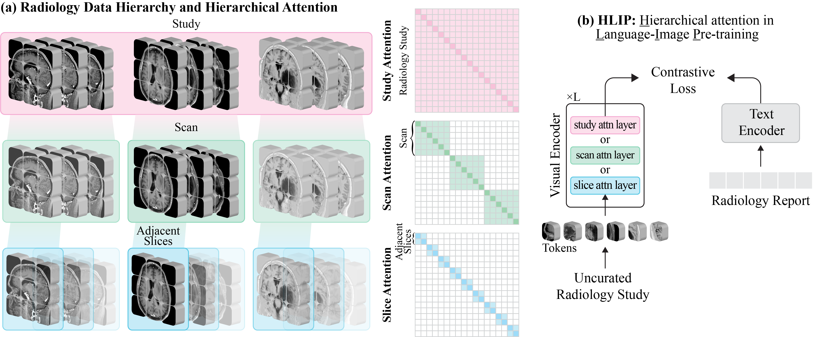
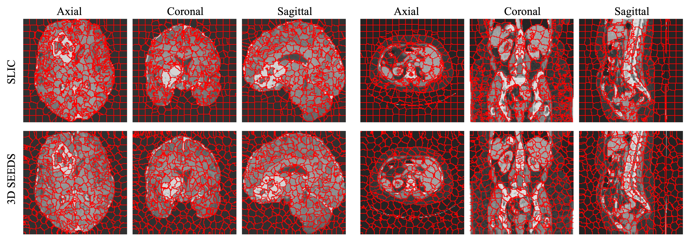
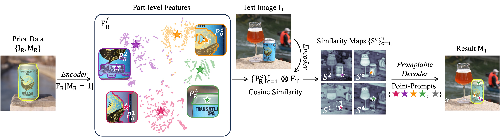
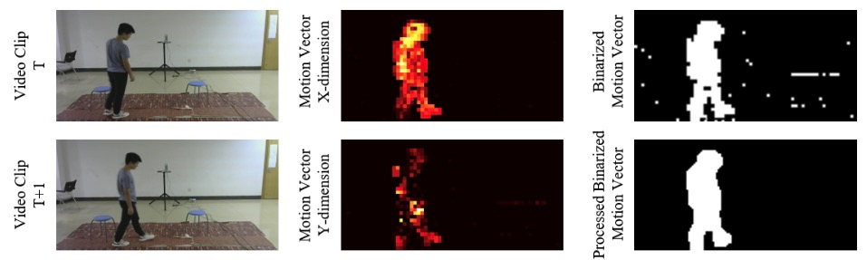

|
Chenhui Zhao 赵晨辉
PhD Student
University of Michigan,
Ann Arbor, MI.
Email: chuizhao@umich.edu
|

|
I am a PhD student in Computer Science and Engineering at the University of Michigan (UofM).
I am advised by Dr. Todd Hollon and Dr. Honglak Lee.
My current research is about language-image pre-training, visual instruction tuning, and one-shot segmentation for medical imaging.
I hold an M.S. in Electronic and Computer Engineering from the UofM,
during which I was advised by Dr. Liyue Shen,
and a B.S. in Electronic Engineering from Nanjing University.
Publications
|

|
Towards Scalable Language-Image Pre-training for 3D Medical Imaging
Chenhui Zhao, Yiwei Lyu, Asadur Chowdury, Edward Harake, Akhil Kondepudi, Akshay Rao, Xinhai Hou, Honglak Lee, Todd Hollon
preprint
[paper]
[code]
|
|

|
Extending SEEDS to a Supervoxel Algorithm for Medical Image Analysis
Chenhui Zhao, Yan Jiang, Todd Hollon
Tech Report
[paper]
[code]
|
|

|
Part-aware Prompted Segment Anything Model for Adaptive Segmentation
Chenhui Zhao and Liyue Shen
TMLR 2025
[paper]
[code]
|
|

|
Self-supervised Multi-Modal Video Forgery Attack Detection
Chenhui Zhao, Xiang Li, Rabih Younes
WCNC 2023
[paper]
[code]
|